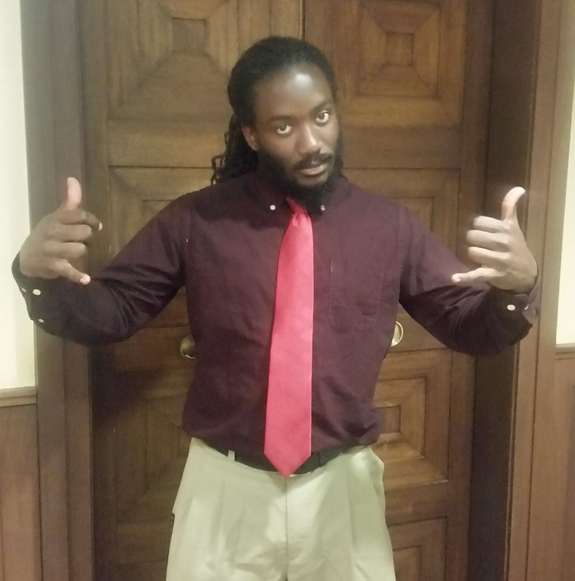

About Me

My name is Kris (almost everyone I know calls me Krispy). I was born and raised in Philadelphia. I was homeschooled up until I went to college. I started college at CCP (Community College of Philadelphia). Tennis and Baseball were the two sports I played on teams growing up. So when I was offered some money to play tennis at Washington College, I took the opportunity. I played for three years getting myself a B.A. in Drama.
Before I graduated college; I got my mixologist certification. Grad school didn't happen, so I went into the service industry. I bartender and serviced for 5 years: teaching tennis on the side. I was really good at it but got bored serving and bartending. I started teaching tennis full time. Teaching to full time is not for me. I have been learning coding on my own for the past 2 years. I decided to taking a coding class to help develope real world skills